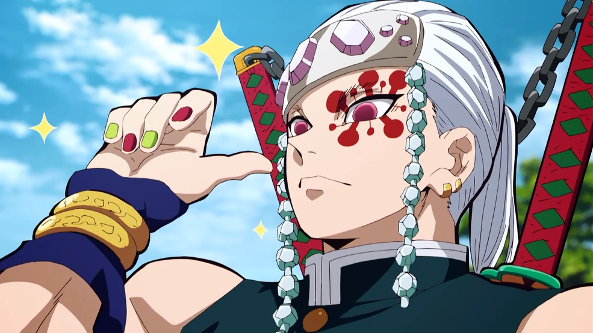
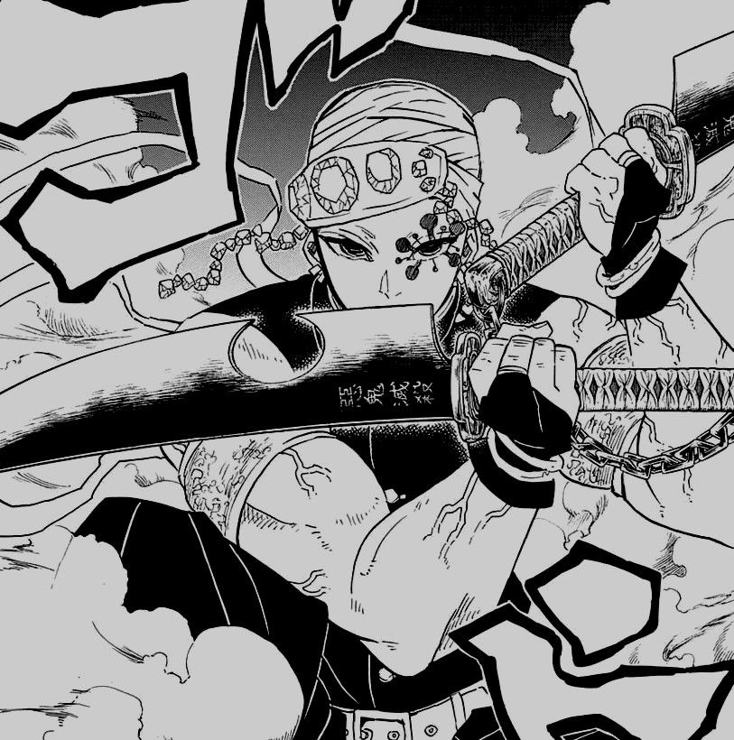
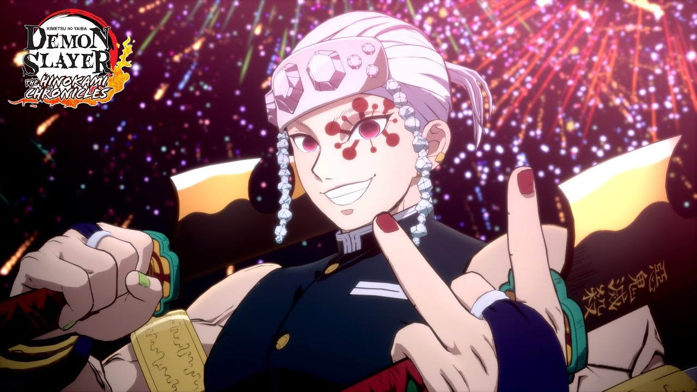
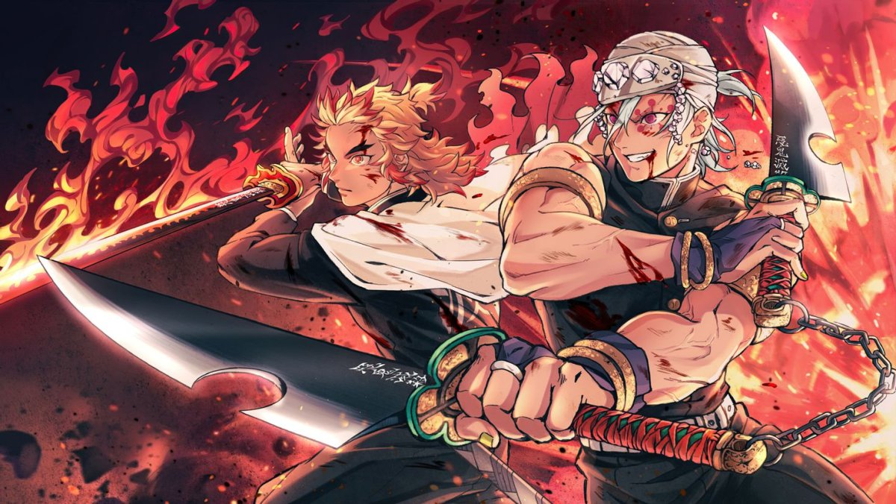
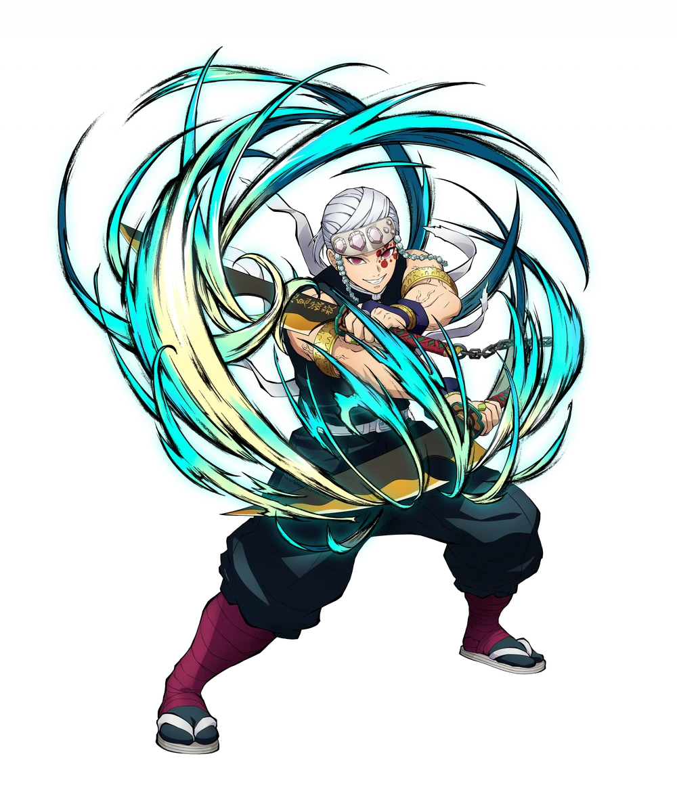

 
Тенген - м'язистий молодий чоловік. На голові носить бандану сірого кольору, а також срібну пов'язку на лобі. На його лівому оці намальована дивна червона постать, а на його ногах є багато бинтів. Тенген одягнений у піджак без рукавів та темні стандартні штани мисливця на демонів. Також на ньому одягнений білий ремінь та білі сандалії. Також варто відзначити, що він носить багато прикрас. У битві проти Гютаро , 6-ої Вищої Луни, він втратив ліву руку та ліве око.

Іноді Тенген має проявлятись як грубий персонаж. Він упевнений у собі і знає всі свої переваги. Незважаючи на це, він добрий у душі та відчуває відповідальність за свої дії. Захищаючи людей під час битви з Шостим Вищим Місяцем, він показує наполегливе дотримання кодексу мисливців за демонами, хоч це й заважало йому в битві. Має три дружини, до яких завжди ставиться з любов'ю та ніжністю, він дуже цінує їх. Як сам Тенген говорив, він - "дамський угодник". Полюбляє все яскраве: вбивства, вибухи. Моментами самокритичний.
Народився приблизно в період Мейдзі, в сім'ї шинобі (ніндзя). Мав 8 братів і сестер, всі були шинобі, але до 15-річчя Тенгена, семеро з них вже були мертві. Так як сім'я занепадала і батько Узуя, охоплений панікою, змушував дітей інтенсивно тренуватися. Єдиними, хто вижив, були Тенген і його другий молодший брат. Він згадував що його брат був копією батька і мислив так само негуманно, як він сам. Надалі, Тенген залишив шлях шинобі, і разом із Сума , Макіо та Хінацуру , які стануть його майбутніми дружинами, став мисливцем на демонів, під безпосереднім впливом Кагаї Убуяшикі . Пізніше він став Стовпом Звуку. Після арки в кварталі червоних ліхтарів Узуй Тенген залишив ряди мисливців на демонів. Незважаючи на це, він брав участь у "тренуваннях зі стовпами" як один із тренерів. Пізніше, під час битви з Мудзаном Кібуцуджі , він разом із колишнім стовпом полум'я Шинджуро Ренгоку захищали нового главу клану Убуяшикі, Кирію та його сестер, Куїну та Канату .

Поліпшений слух: Тенген має загострений слух, подібний до слуху Зеніцу Агацуми. Ця здатність дозволяє йому легко чути шуми глибоко під землею, і він використовує її, щоб одразу визначити, що прямо під ним є канали підземних тунелів та печер, коли він шукає Танджиро Камадо та Дакі. Він також використовує свій надлюдський слух, щоб відстежувати всю активність у Розважальному районі у спробі знайти місцезнаходження демонів, що мешкають у цьому районі. Тенген також використав свій слух, щоб визначити, чи люди все ще на поверсі в будівлі.
Музична партитура: Техніка, розроблена Тенгеном з використанням його загостреного слуху для роботи у поєднанні зі Звуковим Диханням, де він аналізує бойові маневри та деконструює ритм атак своїх ворогів у звук і читає їх як ноти настільки, що кожен бій стає схожим на пісня. Це дозволяє Тенгену отримати уявлення про звички свого супротивника, а також про їхні сліпі зони, що дає йому перевагу перед ними. Проте Тенгену потрібно дуже багато часу, щоб завершити рахунок. Після завершення Тенген зміг битися з Гютаро майже на рівних умовах, незважаючи на втрату лівої руки.
Швидкість і рефлекси: Його швидкість набагато перевершує швидкість Танджиро, Зеніцу та Іносці, які були не в змозі встежити, не кажучи вже про те, щоб вловити, блискавично швидкі рухи Стовпа. Найпримітніше те, що Тенген був досить швидкий, щоб обезголовити Дакі, перш ніж вона змогла навіть усвідомити, що сталося.
Величезна витривалість: Через те, що його виховували так, щоб він став ніндзя, і через частіші спроби його власного батька відродити їх клан, змушуючи Тенгена і його братів і сестер тренуватися ще жорсткіше і болісно, ніж це було необхідно, Тенген розвинув потужну стійкість до болю, що по тому, як він мало реагував те що, що його змушували тренуватися. бути спійманим градом ножів Кунай і пронизаним ними, навіть не здригнувшись і не проявивши жодного дискомфорту чи болю, продовжуючи атакувати Гютаро, ніби нічого не сталося. Пізніше також було відзначено, що Тенген отримав інші серйозні травми під час бою, наприклад, Гютаро відрізав йому око і руку, і йому також вдалося ігнорувати біль від таких травм.
Величезна сила: Тенген має величезну фізичну силу. Тенген зайняв друге місце у змаганнях з армрестлінгу серед усіх Стовпів, і лише Гемей Хімеджима перевершив його. Тенген багато разів демонстрував свою силу, тому що було показано, що він без особливих зусиль несе Аоя і Нахо, а незабаром після цього одним ударом у живіт позбавив свідомості Зеницу та Іноске. Гігантські тесаки Нічірін, безперервно розмахуючи ними, щоб без особливих проблем відбиватися від своїх супротивників, і будучи в змозі тримати обидва своїх величезних тесаків на кінчику всього двома пальцями.
Неприборкана воля: Тенген має безстрашний дух і величезну силу волі, ніколи не здається, навіть коли стикається з труднощами і важкими обставинами. Незважаючи на те, що на початку його отруїв Гютаро, він сміливо заявив, що може битися просто відмінно, навіть атакувавши одночасно Дакі і Гютаро, відбивши кілька клинків з отруйною кров'ю відсутньою рукою. Навіть коли його ліве око було вибите, він упорався з усіма ушкодженнями, поки демони не були переможені.
М'язовий контроль: Тенген може певною мірою контролювати свої власні м'язи. Під час битви з Гютаро Тенген використовував свої м'язи, щоб зупинити своє серце, щоб тимчасово запобігти циркуляції отрути, що дозволило йому завдати удару по Гютаро, який вважав, що він мертвий.
Навчання шинобі: Перш ніж приєднатися до Корпусу Винищувачів Демонів і стати Стовпом, Тенген був ніндзя з родини шинобі. Тенген отримав надзвичайно суворе навчання, яке вбило всіх його братів і сестер, за винятком його молодшого брата, який став холодним і безсердечним. Однак, в результаті його інтенсивного навчання шинобі, Тенген має велику технічну майстерність у поводженні зі зброєю, таким як кунаї та вибухові речовини. Його тренування також зробили його надзвичайно терпимим до болю та стійким до отрути.
Підвищена скритність: Тенген надзвичайно потайливий, рухається так безшумно, що не видає жодного звуку і не порушує повітря. Його скритність дозволяла йому ухилятися від почуттів як Танджиро, так і Іноске, обидва з яких мали загострений нюх і дотик відповідно. Пізніше Тенген зміг непомітно підкрастись і обезголовити Дакі.
Стійкість до отрут: Як колишній шинобі, Тенген, як було показано, має високу стійкість до отрути настільки, що він міг продовжувати битися, перебуваючи під дією отрути від Гютаро, який за звичайних обставин вбив би когось миттєво.
